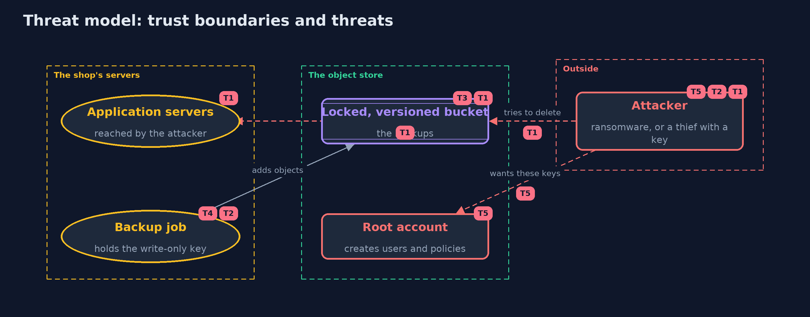

Threat Model — Backups and Recovery with an S3 Object Store
A threat model answers four questions: what are we protecting, who or what could harm it, how, and what do we do about it. This one covers this project's own demo system, not a production deployment. Domain: an online store.
Scope
The backups of an online store held in an S3-compatible object store: the objects and their versions, the locks, the identity that writes backups, and the root account. It covers ransomware on the application servers and a thief who steals a key. It does not cover the store's disks, the network between the servers and the store, or the contents of the backups.
What we protect (assets)
- The backup objects and their older versions.
- The write-only key of the backup job.
- The root credentials of the store.
- The retention settings.
Who and what acts on the system
- The shop's application and backup job.
- Ransomware running with the application's rights.
- A thief who has stolen the backup job's key.
- An administrator who holds the root account.
Trust boundaries
A trust boundary is a line that data or a request crosses between parts that trust each other differently. Threats cluster where those lines are.
- Application servers to the object store: only the write-only identity crosses it.
- The backup identity to the root account: the root account can change any policy.

Each dashed box is a trust boundary. A rose tag such as T1 shows where the threat of that number, in the table below, applies.
Threats, using STRIDE
STRIDE is a checklist of six kinds of threat: Spoofing (S), Tampering (T), Repudiation (R), Information disclosure (I), Denial of service (D), Elevation of privilege (E).
| Id | Kind | Threat | Where it shows up | Control in this project | What is left |
|---|---|---|---|---|---|
| T1 | Tampering | Ransomware overwrites or deletes the backups using the application's access | the bucket | Versioning keeps the old data, and Object Lock refuses deletes of locked versions | Versions cost storage, and a lock protects only until its date |
| T2 | Elevation of privilege | A thief with the backup job's key reads or destroys the backups | ObjectStoreContainer.createWriteOnlyUser |
The policy has one action, PutObject, on one bucket | The thief can still add junk, so quotas and alerts on unusual uploads are needed |
| T3 | Tampering | A backup is damaged in transit or at upload | Store.put |
A SHA-256 checksum is sent and verified by the store | Only a restore test shows that the backup is usable |
| T4 | Repudiation | Nobody can say who uploaded or removed a backup | the backup job | A separate identity for the job makes its actions attributable | Audit logging of the store has to be switched on and kept elsewhere |
| T5 | Elevation of privilege | The root account is stolen, and policies, users and governance locks are changed | the root account | COMPLIANCE locks cannot be lifted even by the root account | GOVERNANCE locks can, new users can be added, and the store's disks are outside the lock, so keep the root credentials out of daily use and keep a copy elsewhere |
Assumptions
- The root credentials are kept out of the application servers.
- The store's disks and the account itself are not attacked.
- In the demo, the store is local and its credentials are fixed demo values.
Out of scope
- Replication to another site or provider.
- Encryption keys and key management.
- The correctness of the backup's contents: the plain project's restore test.
How the tests check this
ObjectStoreTest(integration, Docker) checks versions, delete markers, both lock modes, the write-only identity, checksums, the lifecycle rule, and that nothing is left running.StoreUnitTestchecks the SHA-256 helper against the published value, the wording of refusals, and that the policy has one action.DemoRunsTest(integration) compares the whole demo with the golden output.
Where this model goes next
The safe-habits module is finished with this project. The track continues with the tool versions of the earlier projects and then the intermediate level.